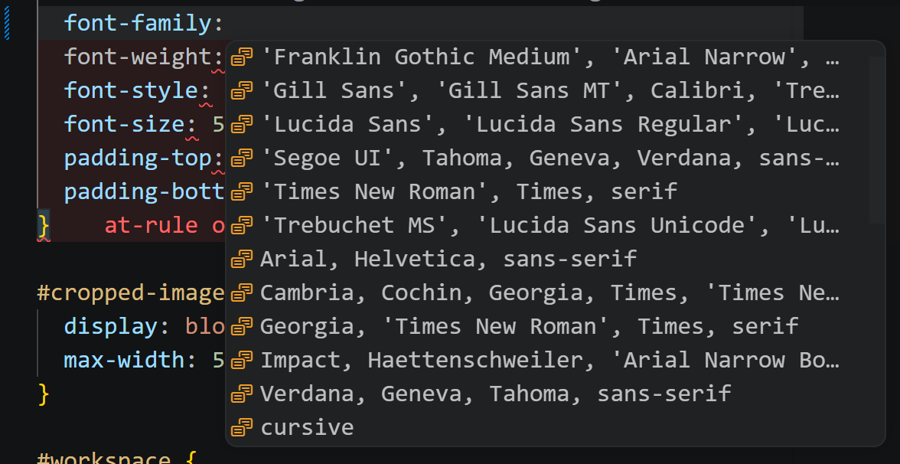
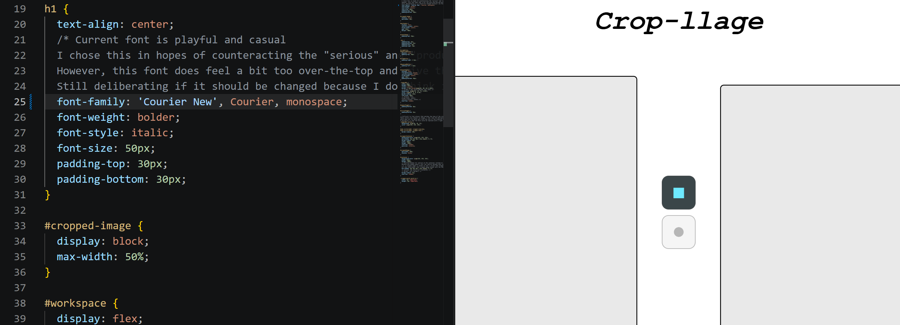
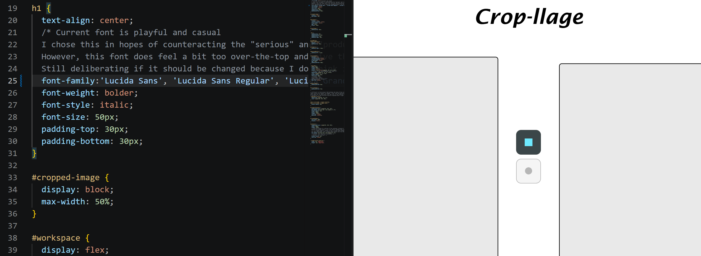
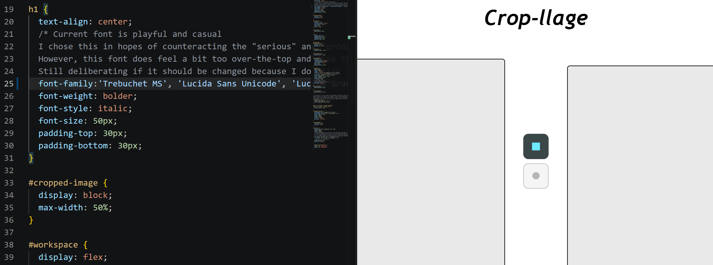
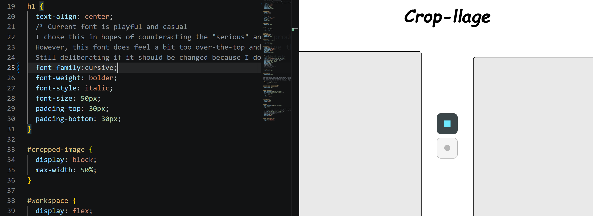

From beginning speculation to prototype to end product, I felt that I
rarely deviated, from my vision, on what I wanted Crop-llage to be.
During “Project Speculation” for assignment 1, I stated that “satisfaction,” for both worth and purpose, was what I desired to convey with Crop-llage, hence providing users a stress-free and engaging experience. Satisfaction entailed:
Speculation, the proposed features that were implemented include:
Notable features that were added post-project-speculation:
During “Project Speculation” for assignment 1, I stated that “satisfaction,” for both worth and purpose, was what I desired to convey with Crop-llage, hence providing users a stress-free and engaging experience. Satisfaction entailed:
- Intuitive controls
- Responsive and smooth actions/feedback
- Minimalistic, neat and organized design
- Intuitive controls: keybinds, shape toggle icons, image-manipulation elements (stretch, rotate, scale anchor points).
- Responsive actions/feedback: click, double-click to clear canvas, click to bring cropped image to top layer.
- Minimalistic design: apple-like, white-grey colour palette, rounded corners of containers, symmetry, minimal text.
Speculation, the proposed features that were implemented include:
- Import image option
- Max image-size restriction (500x500px)
- Crop shapes (square and circle)
- Image manipulation controls (re-orientation and re-arrangement)
- Download image button
- Minimalistic design
- Left | Right individual panels to differentiate between Crop | Collage
- Crop shapes (triangle and star)
- Stencil click and crop concept (“Clicking on the image canvas, whilst having a shape selected, will crop the image using the shape.”)
Notable features that were added post-project-speculation:
- Modal window alteration, conveyed via double-clicking an icon to confirm and execute respective function (i.e. clear canvas)
Designing for Novelty
I remember initially reading the project brief and “novelty” was
mentioned. The term stuck with me ever since.
The most challenging aspect of the entire project was designing for novelty. Throughout the entire development of Crop-llage, I was desperately trying to come up with something novel. What design could be new, never been seen/done before, and was related to something as basic as cropping and collaging?
During these brainstorming periods, brief flashes of other students’ prototypes would constantly appear in my mind, and how creative and artistic they were. My mind also kept going back to Flippory, and how it beautifully re-imagines the behaviour of such a simple image flipping concept. Both my concept of cropping, and Flippory’s concept of flipping images, are similar in that they are basic image-manipulation functions. If Flippory was able to come up with something so unique, then surely I could as well. Basically, the influence of others’ works greatly motivated me to seek out novelty.
To give context, when playing a game, I’m a person who heavily values responsive, intuitive and easy mechanics/function over aesthetic design. Hence, these same values were translated to my worth and purpose for Crop-llage’s development, because I imagined how I would feel when using a creative tool. Since I was more mechanics based, I ruled out the possibility that I could design something novel related to aesthetics, completely focusing on achieving novelty within functionality.
For assignment 2, it was stated in the brief that there should be discussion about how novelty was achieved to your chosen interaction design principle (information design, feedback or mapping).
I felt like I was honestly screwed. I believed Crop-llage did not boast anything novel, and the only design remotely close was mapping hidden keybinds to functions like pressing enter/space to crop an image.
You should’ve felt my sense of relief and confusion, during a brief 1-on-1 meeting with Patrick before assignment 2, where he stated that Crop-llage had a novel design for one of the three interaction design principles. In my head, I was thinking, “there is?” I thought Patrick was referring to the keybinds, so I replied with mapping. I was wrong.
Patrick revealed that novelty was within the information design of the two left/right canvases.
I was dumb-founded. Novelty was right under my nose since the beginning? I had proposed these duo canvases back in my Project Speculation for assignment 1. After processing it, I realized that I have not seen or used anything related to two canvases on the same screen before.
Wait, now that I’m writing this, I realized I have actually used/seen something similar. THE NINTENDO DS. The bottom and top screens are basically two canvases! I just re-positioned them to be row orientated rather than column, but I digress.
Patrick showing that I already possessed novelty really gave me confidence in Crop-llage, and motivated me to develop and refine it to the best I could.
In addition to the dual canvases, I’d say another novel feature is the modal type window alteration of double-clicking an icon to execute a function (clear canvas) instead of having a confirmation pop-up window.
I assumed that if users were frequently needing to reset their work, then the constant confirmation pop-up and requirement to press “yes/no,” would be too interruptive and tedious, leading to user frustration and disengagement from using Crop-llage.
By making it a double-click and linking how-to instructions, to quickly appear adjacent to the icon, when the mouse is hovered over, it ticks all the boxes related to my worth and purpose of providing a satisfying user experience (minimalistic design, intuitive controls, responsive feedback).
The most challenging aspect of the entire project was designing for novelty. Throughout the entire development of Crop-llage, I was desperately trying to come up with something novel. What design could be new, never been seen/done before, and was related to something as basic as cropping and collaging?
During these brainstorming periods, brief flashes of other students’ prototypes would constantly appear in my mind, and how creative and artistic they were. My mind also kept going back to Flippory, and how it beautifully re-imagines the behaviour of such a simple image flipping concept. Both my concept of cropping, and Flippory’s concept of flipping images, are similar in that they are basic image-manipulation functions. If Flippory was able to come up with something so unique, then surely I could as well. Basically, the influence of others’ works greatly motivated me to seek out novelty.
To give context, when playing a game, I’m a person who heavily values responsive, intuitive and easy mechanics/function over aesthetic design. Hence, these same values were translated to my worth and purpose for Crop-llage’s development, because I imagined how I would feel when using a creative tool. Since I was more mechanics based, I ruled out the possibility that I could design something novel related to aesthetics, completely focusing on achieving novelty within functionality.
For assignment 2, it was stated in the brief that there should be discussion about how novelty was achieved to your chosen interaction design principle (information design, feedback or mapping).
I felt like I was honestly screwed. I believed Crop-llage did not boast anything novel, and the only design remotely close was mapping hidden keybinds to functions like pressing enter/space to crop an image.
You should’ve felt my sense of relief and confusion, during a brief 1-on-1 meeting with Patrick before assignment 2, where he stated that Crop-llage had a novel design for one of the three interaction design principles. In my head, I was thinking, “there is?” I thought Patrick was referring to the keybinds, so I replied with mapping. I was wrong.
Patrick revealed that novelty was within the information design of the two left/right canvases.
I was dumb-founded. Novelty was right under my nose since the beginning? I had proposed these duo canvases back in my Project Speculation for assignment 1. After processing it, I realized that I have not seen or used anything related to two canvases on the same screen before.
Wait, now that I’m writing this, I realized I have actually used/seen something similar. THE NINTENDO DS. The bottom and top screens are basically two canvases! I just re-positioned them to be row orientated rather than column, but I digress.
Patrick showing that I already possessed novelty really gave me confidence in Crop-llage, and motivated me to develop and refine it to the best I could.
In addition to the dual canvases, I’d say another novel feature is the modal type window alteration of double-clicking an icon to execute a function (clear canvas) instead of having a confirmation pop-up window.
I assumed that if users were frequently needing to reset their work, then the constant confirmation pop-up and requirement to press “yes/no,” would be too interruptive and tedious, leading to user frustration and disengagement from using Crop-llage.
By making it a double-click and linking how-to instructions, to quickly appear adjacent to the icon, when the mouse is hovered over, it ticks all the boxes related to my worth and purpose of providing a satisfying user experience (minimalistic design, intuitive controls, responsive feedback).
Instances of Design Judgement via Exploration
The refinement process was where all the exploration took place. The
many little tweaks and variations, until I arrived at the current look
of Crop-llage. There were two specific elements that I experimented
on: the Crop-llage title font and the infamous key-bind manual.
Finding the right font for Crop-llage was a challenge, because I’m just so picky. I wanted a font that looked a balance between professional and casual, while being minimalistic at the same time. If a font does not instantly resonate with me, it’s off to the next! I thought I would spend an unreasonable amount of time on this but luckily, I found the one within vscode’s pre-provided fonts.
One by one, these fonts were put to the test. I will show a few fonts and give my reasoning why they did not make the cut.
Looks too elongated and I don’t like how the ‘L’s’ look like ‘1’s’.
Looks too fancy. Too many curves such as within the “a, p, g” and “e.”
Looks too alien, especially the “g” and “e.” Looks like letters you’d find from the Aztecs or any old jungle tribal style.
And finally, the “cursive” font was next on the chopping block. Looks familiar doesn’t it? My initial thought was, “I am definitely not using this goofy font.” This font did not belong with my minimalistic theme at all! It sticks out like a sore thumb.
For some reason, I didn’t immediately move onto the next font. I sat there staring at it. Maybe I forced myself to like it, but it honestly started to grow on me. And for that reason, I ran with it and never looked back since.
Logically speaking, if I were to reason why this font resonated with me, is possibly due to the contrasting playful, casualness which balances out the serious, productive tone of the rest of Crop-llage. And this balance personally brings peace of mind.
In the first place, I didn’t want Crop-llage to seem so “dull” and this playful font helps mitigate that by injecting some liveliness, which I hope users would feel, portrayed through the creation of fun collages and using my creative tool without the fear of failure and judgement.
Now moving-on to the dreaded key-bind manual. Oh how much time I WASTED trying to make it look good.
I’m just going to show multiple iterations. I am quite literally fed up thinking about it (could you tell I harbored negative feelings towards it? Well now you do).
Symmetrical
Left | Center
Right | Center I know I have been dragging the key-bind manual but I have to admit,
it is an aspect of Crop-llage that I am most proud of. The amount of
time spent trying to find the right look, and finally achieving it,
feels very fulfilling.
I know I have been dragging the key-bind manual but I have to admit,
it is an aspect of Crop-llage that I am most proud of. The amount of
time spent trying to find the right look, and finally achieving it,
feels very fulfilling.
Finding the right font for Crop-llage was a challenge, because I’m just so picky. I wanted a font that looked a balance between professional and casual, while being minimalistic at the same time. If a font does not instantly resonate with me, it’s off to the next! I thought I would spend an unreasonable amount of time on this but luckily, I found the one within vscode’s pre-provided fonts.

One by one, these fonts were put to the test. I will show a few fonts and give my reasoning why they did not make the cut.

Looks too elongated and I don’t like how the ‘L’s’ look like ‘1’s’.

Looks too fancy. Too many curves such as within the “a, p, g” and “e.”

Looks too alien, especially the “g” and “e.” Looks like letters you’d find from the Aztecs or any old jungle tribal style.

And finally, the “cursive” font was next on the chopping block. Looks familiar doesn’t it? My initial thought was, “I am definitely not using this goofy font.” This font did not belong with my minimalistic theme at all! It sticks out like a sore thumb.
For some reason, I didn’t immediately move onto the next font. I sat there staring at it. Maybe I forced myself to like it, but it honestly started to grow on me. And for that reason, I ran with it and never looked back since.
Logically speaking, if I were to reason why this font resonated with me, is possibly due to the contrasting playful, casualness which balances out the serious, productive tone of the rest of Crop-llage. And this balance personally brings peace of mind.
In the first place, I didn’t want Crop-llage to seem so “dull” and this playful font helps mitigate that by injecting some liveliness, which I hope users would feel, portrayed through the creation of fun collages and using my creative tool without the fear of failure and judgement.
Now moving-on to the dreaded key-bind manual. Oh how much time I WASTED trying to make it look good.
I’m just going to show multiple iterations. I am quite literally fed up thinking about it (could you tell I harbored negative feelings towards it? Well now you do).
Symmetrical
Left | Center
Right | Center
I know I have been dragging the key-bind manual but I have to admit,
it is an aspect of Crop-llage that I am most proud of. The amount of
time spent trying to find the right look, and finally achieving it,
feels very fulfilling.
Importance of Peer Review
I am always nerve-wracked when presenting personal work to peers
because of the fear of judgement and humiliation. However, I've always
found that if I get past the surface level shame, and actually process
the feedback given, it always unveils opportunities for my work to be
improved. In Crop-llage’s case, peer reviews were the number one
factor for how refined it turned out.
Peer reviews refers to the whole class peer review event, 1-on-1 student teacher meetings and external group conversations. The class peer review provided support and validation for certain design choices, and presented few suggestions for improvements here and there. I would say it was pretty surface level.
Our group conversations harbored a ton of support and positivity for each other’s projects and when we really sat down and analysed each other’s work, the feedback and suggestions were extremely beneficial. Personally, group conversations helped me by hearing outside perspectives about Crop-llage and its relevant features, such as asking Sami and Ari (group-mates) if they would scroll down or click the moving down arrow when seeing it for the first time.
1-on-1 student teacher meetings, I found, were the most valuable type of peer review, in terms of the progression of Crop-llage. Patrick is a great outside perspective, providing many novel thoughts and suggestions that surprised me because those thoughts didn’t even cross my mind.
To name instances, Patrick was the first to suggest the implementation of a modal window for the clear canvas button, when it required only one click to execute the function, to mitigate user confusion where they might think the button is used to delete a cropped image, but instead have their entire work erased. He also presented his perspective on the appearance of the key-bind manual (the most recent look) and how the separation of cropper and collage keybinds could also be differentiated by mouse and keyboard.
All in all, peer reviews heavily contributed to the refinement of Crop-llage.
Peer reviews refers to the whole class peer review event, 1-on-1 student teacher meetings and external group conversations. The class peer review provided support and validation for certain design choices, and presented few suggestions for improvements here and there. I would say it was pretty surface level.
Our group conversations harbored a ton of support and positivity for each other’s projects and when we really sat down and analysed each other’s work, the feedback and suggestions were extremely beneficial. Personally, group conversations helped me by hearing outside perspectives about Crop-llage and its relevant features, such as asking Sami and Ari (group-mates) if they would scroll down or click the moving down arrow when seeing it for the first time.
1-on-1 student teacher meetings, I found, were the most valuable type of peer review, in terms of the progression of Crop-llage. Patrick is a great outside perspective, providing many novel thoughts and suggestions that surprised me because those thoughts didn’t even cross my mind.
To name instances, Patrick was the first to suggest the implementation of a modal window for the clear canvas button, when it required only one click to execute the function, to mitigate user confusion where they might think the button is used to delete a cropped image, but instead have their entire work erased. He also presented his perspective on the appearance of the key-bind manual (the most recent look) and how the separation of cropper and collage keybinds could also be differentiated by mouse and keyboard.
All in all, peer reviews heavily contributed to the refinement of Crop-llage.
Final Thoughts and Future Plans
I’m very proud of how Crop-llage turned out. There were rarely any
hiccups and overall, development progressed pretty smoothly. I would
say the reason for this was because I had a strong foundation, a clear
vision of how Crop-llage would look and function from the start.
Fatta described my creative tool perfectly. A “one-stop-shop.” Very convenient, straight to the point, reliable and quick. Everything I speculated it to be.
For future plans, I want to implement a layering system like the one Adobe Photoshop or Illustrator has, for more user freedom and remove the frustration of disruptive workflow, via accidentally clicking a cropped image and sending it to the top.
Fatta described my creative tool perfectly. A “one-stop-shop.” Very convenient, straight to the point, reliable and quick. Everything I speculated it to be.
For future plans, I want to implement a layering system like the one Adobe Photoshop or Illustrator has, for more user freedom and remove the frustration of disruptive workflow, via accidentally clicking a cropped image and sending it to the top.
AI Acknowledgment
AI (Claude) was used in fixing code regarding webpage structure and style.